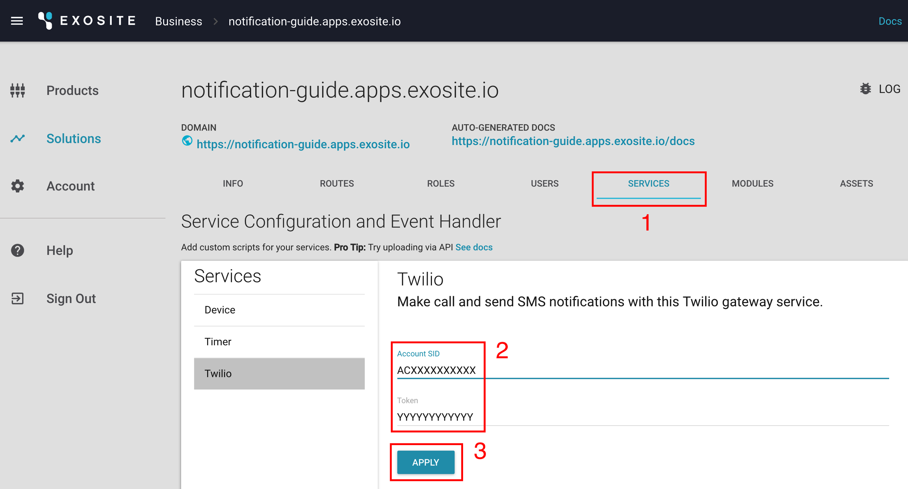
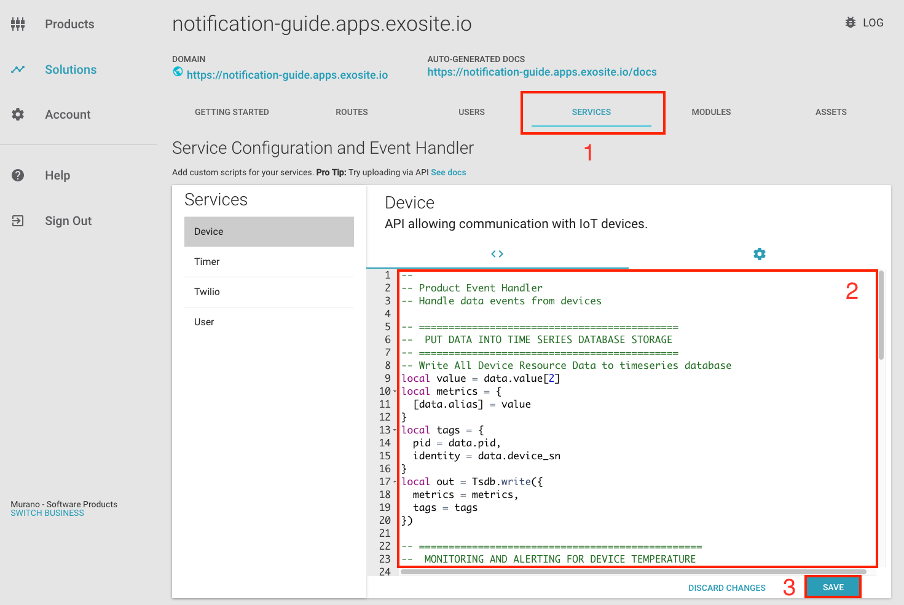

Send Notifications
This guide gives Murano users an example of how to send notifications to receivers (e.g., other users, customers, etc.) through the Twilio SMS and Email services inside Murano.
Scenario
Once you have connected your devices to the Murano platform and are gathering time series data into your solution, you may want to send a notification to the device owner or maintainer as soon as possible when there is any data of interest. This type of alarm mechanism can help you to know the status of running devices in real time and take some timely actions if any alerting rules are matched.
Implementing the alarm mechanism is done via the Device Gateway service event handler of your solution. Event Handlers and other scriptable components of your solution are written in Lua and define the rules and actions you will want in your solution. Next, you will go through the implementation of monitoring device temperatures and triggering real-time notifications to the target receivers when a temperature threshold is reached.
Configuration
In the two sections that follow, configurations required for sending notifications via Twilio SMS and Email are described in detail.
Twilio
To use the Twilio service for sending notifications, you only need to provide two credentials from a Twilio account:
Account SID: acts as a username
Auth Token: acts as a password
In your solution page, you can configure your Twilio credentials with following steps:
Clicking on the SERVICES tab, you should see an item called "Twilio" in the service list.
Fill in the credentials, Account SID and Token, from your own Twilio account.
Click the "APPLY" button to save the credentials.
You can update the credentials later to use another Twilio account just by updating the content and clicking "APPLY" again.

More details regarding the above credentials can be found at the Twilio official documentation links below:
- What is Application SID?
https://support.twilio.com/hc/en-us/articles/223136607-What-is-an-Application-SID-
- What is the Auth Token?
https://support.twilio.com/hc/en-us/articles/223136027-Auth-Tokens-and-how-to-change-them
Email notifications are configurable via the Email service. Murano Community accounts provide 20 complimentary emails per day and uses mailrelay@exosite.com as the sender.
In most use cases, maintaining brand consistency for your users is a priority. Use the steps in the following section to set up your own SMTP server.
Configure SMTP
The connection parameters for the email trigger are listed and defined below.
In a future version, you will be able to set the SMTP settings of Email service directly on the Murano project under the SERVICES tab in your solution page so you will not have to set your credentials within the Lua code of the email trigger.
| server | Fully qualified domain name of you email server, given by your email provider. |
| port | The port number used by the SMTP server (e.g., 25, 587 or 2525 for http and 25, 587, 465 or 2526 for https scheme) |
| scheme | Optional connection scheme, smtp by default. You can specify smtps if your email provider supports it. |
| user | The SMTP server account |
| password | The SMTP server password |
Gmail Example
For example, Gmail SMTP information is available here https://support.google.com/a/answer/176600, and your connection settings should look like:
server: smtp.gmail.com
port: 465
scheme: smtps
user: yourname@gmail.com
password: your account password
Important:
Do not use a physical person account. Use a dedicated email or group for notification purposes.
Gmail users will need to activate external SMTP access by activating the "lesssecureapps" mode on https://www.google.com/settings/security/lesssecureapps.
Scripting
In this section, some Lua module sample codes have been provided for sending notifications by Twilio or Email services, as well as a case of setting up a trigger logic for temperature alerts using those modules.
Notification module
Twilio
Set a Lua function to call the Twilio.postMessage() operation.
local emitting_number = "+1##########"
function sendSMS (to, message)
return Twilio.postMessage({
From = emitting_number,
To = to,
Body = message
})
end
Set a Lua function to use the Email.send() operation.
local connection = {
server="smtp.gmail.com",
port=465,
scheme="smtps",
user="name@gmail.com",
password="password"
}
function sendEmail (to, subject, text)
return Email.send({
to=to,
subject=subject,
text=text,
from=connection.user, -- Or any other
connection=connection
})
end
Trigger logic
Be sure to link at least one product to your solution for getting device event triggers. If you do not know how to do this, please refer to the Solution Quickstart.
In your solution page, you can configure your Device Gateway (or Product) service event handler with following steps:
Clicking on the SERVICES tab, you should be able to see an item called Device in the service list.
Fill in the editor area of the event handler with your own trigger logic.
Click the "SAVE" button to save the code.

Here is a Lua sample code of Device Gateway service event handler including the two module functions from above. This code will trigger notifications through both SMS and Email if the following criteria are satisfied:
Device temperature is greater than 65 degrees Celsius.
Last alarm notification was triggered more than five minutes ago (in order to avoid sending the notifications too frequently).
--
-- Product Event Handler
-- Handle data events from devices
-- ============================================
-- PUT DATA INTO TIME SERIES DATABASE STORAGE
-- ============================================
-- Write All Device Resource Data to timeseries database
local value = data.value[2]
local metrics = {
[data.alias] = value
}
local tags = {
pid = data.pid,
identity = data.device_sn
}
local out = Tsdb.write({
metrics = metrics,
tags = tags
})
-- ================================================
-- MONITORING AND ALERTING FOR DEVICE TEMPERATURE
-- ================================================
-- Get the last alarm trigger time for this device
local resp = Keystore.get({
key = "last_alarm_time_" .. data.device_sn
})
local last_alarm_time = -1
if type(resp) == "table" and type(resp.value) == "string" then
last_alarm_time = tonumber(resp.value)
end
-- Will trigger notifications through SMS and email if the following criteria are satisfied:
-- 1. The value of device temperature is greater than 65 degrees Celsius.
-- 2. Last alarm notification was triggered more than 5 minutes ago.
-- (To avoid sending the notifications too frequent)
local celsius_alarm_threshold = 65
local minimum_alarm_interval = 300 -- in seconds (5 minutes)
if data.alias == "temperature" then
if celsius_alarm_threshold > 0 and value > celsius_alarm_threshold then
local alarm_interval = os.time() - last_alarm_time
if minimum_alarm_interval > alarm_interval then
-- Send alarm SMS and email
local subject = "IoT Warning"
local message = "The temperature of your device (SN: " .. data.device_sn ..
") is higher than the alarm threshold right now. " ..
"(Value: " .. value ..
"). Please contact device maintainers as soon as possible."
local contact = {
name = "Mr contact",
email = "contact@email.com",
phone = "+886123456789"
}
-- send an SMS message to a phone number
local out = sendSMS(contact.phone, message)
-- send the email message
local emailout = sendEmail(contact.email, subject, message)
-- Record the alarm time
Keystore.set({
key = "last_alarm_time_" .. data.device_sn,
value = os.time()
})
end
end
end
 Language
Language